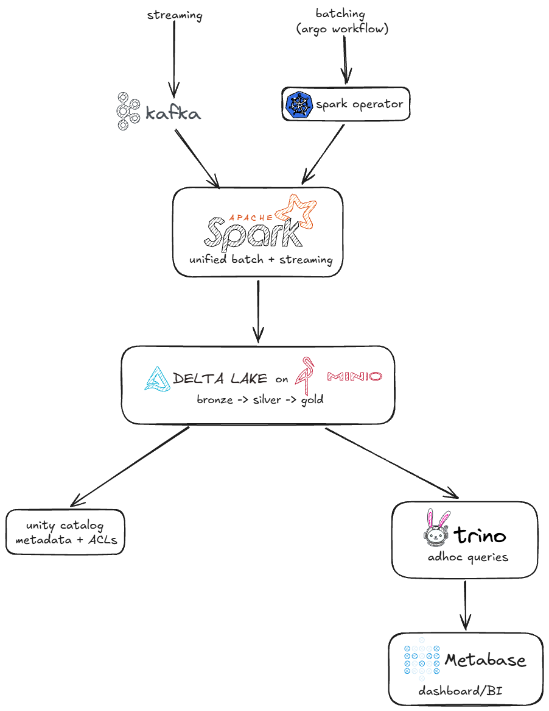

Some of you already know I run a bunch of self-hosted services out of a homelab I’ve been building for over two years now. It started as a place to store personal files, but it’s grown into something a few people in my local community actually rely on.
I work in data engineering for a living, but I’ve never had my own data platform. At some point that stopped making sense to me — I have the infrastructure, I have the knowledge, so why not build one?
So this is the first post in a new series about building a data platform, from scratch, on my own hardware.
Day 1 — Sketching the scaffold Link to heading
The plan today was just to design something. Not every detail needs to be nailed down yet, but I need enough of a scaffold to turn into a real work plan.
I already run Kubernetes across a few nodes on top of my VM servers, so that’s an easy call: Kubernetes will be the cluster manager.

Nothing fancy here, and honestly, I don’t want fancy. This is meant to be a simple, open-source platform for simple problems.
The trigger for all of this was actually one specific problem: I want to analyze logs from my Nginx servers. On its own, that wouldn’t justify building an entire platform — but I know more problems like this are coming, and I’d rather solve them once, properly, than patch together one-off scripts every time.
Here’s where I landed on scope for now:
- MinIO
- Kafka
- Stream Nginx logs into a Kafka topic
- Read the streaming data locally and process it
- Plan the deploy
Later:
- Catalog
- Trino
- Metabase
One thing worth saying up front: this isn’t fault-tolerant infrastructure. It’s a lean setup, built to solve real (if small) problems and to learn along the way.
Day 2 — Object storage Link to heading
First decision: where does the data live? MinIO was the obvious choice — it’s well established at this point and there’s no shortage of ways to run it.
I spun up a 2GB RAM VM and installed it with Podman, backed by SSD storage rather than NVMe (no need to burn the fast disks on this). Once it was up, I created a lakehouse/ bucket and pushed a mock file to it just to confirm everything was wired correctly. It was.
Day 3 — The broker Link to heading
Today was about the message broker. I went with Kafka in KRaft mode — no ZooKeeper to babysit — deployed with Podman on another 2GB RAM VM.
This one was refreshingly painless. I tested it with the Kafka CLI tools under /opt/kafka/bin/ and everything checked out. (We’ll see if that holds up.)
Day 4 — Where it got interesting Link to heading
Time to actually get Nginx logs flowing into Kafka. I picked Fluent Bit for this — it’s lightweight and a common choice for containerized setups, so it felt like the right tool for the job.
I put together the Fluent Bit compose file without much trouble. But when I got to editing the Nginx config, I stopped myself — I have daily users on these services, and touching that config without a proper backup felt reckless. So I closed the laptop and picked it back up the next day.
Day 5 — Logs, finally Link to heading
Here’s the wrinkle I ran into: I’m not running vanilla Nginx, I’m running Nginx Proxy Manager in front of everything. That changes where the config needs to go.
After backing everything up, I added this to /data/nginx/custom/http_top.conf:
log_format json_combined escape=json
'{'
'"time":"$time_iso8601",'
'"remote_addr":"$remote_addr",'
'"request_method":"$request_method",'
'"request_uri":"$request_uri",'
'"status":$status,'
'"body_bytes_sent":$body_bytes_sent,'
'"request_time":$request_time,'
'"upstream_response_time":"$upstream_response_time",'
'"http_referer":"$http_referer",'
'"http_user_agent":"$http_user_agent",'
'"host":"$host"'
'}';
And this to /data/nginx/custom/server_proxy.conf:
access_log /data/logs/json-access.log json_combined;
That’s it — every proxy host now logs to a single JSON file, in a consistent format, with zero per-host edits in the Advanced tab. Restarted the server and it just worked.
From there, it was a matter of getting Fluent Bit to pick up that log file and push it into Kafka. Took a bit of trial and error, but I got there. Here’s the topic receiving real traffic:
root@debian:~# podman exec -it kafka /opt/kafka/bin/kafka-console-consumer.sh --topic nginx-access-logs --bootstrap-server localhost:9092
{"time":1784146120.0,"remote_addr":"172.71.195.41","request_method":"GET","request_uri":"/robots.txt","status":200,"body_bytes_sent":2105,"request_time":0.001,"upstream_response_time":"0.001","http_referer":"","http_user_agent":"Mozilla/5.0 AppleWebKit/537.36 (KHTML, like Gecko; compatible; bingbot/2.0; +http://www.bing.com/bingbot.htm) Chrome/116.0.1938.76 Safari/537.36","host":"carlos.sjdr.cloud"}
Real logs, flowing in real time. That’s a solid place to close out the week.
Up next Link to heading
Next week I’m getting into the code side: PySpark for processing, Kubernetes manifests for the deploy, and whatever else comes up along the way. Stay tuned.